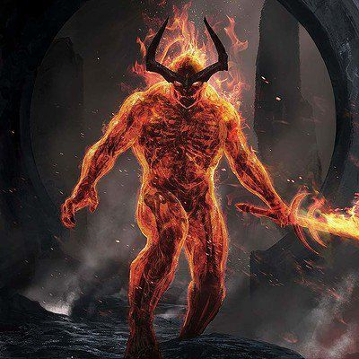

LA CREAZIONE

Comincerò nel momento in cui non c'era niente di quello che conosci: né montagne, né fiumi, né cielo, né stelle, né luce, né alberi, né animali. Come puoi immaginare, neanche gli uomini esistevano. In realtà, c'era qualcosa di molto spaventoso, come un vuoto gigantesco che si chiamava Caos (che in greco significa 'apertura'), un'immensa bocca lugubre che tutto inghiottiva, un abisso senza fine in cui le cose cadevano eternamente in tutte le direzioni. In questa oscurità grandiosa, si trovavano tutti gli elementi che scomparivano, la terra, l'aria, l'acqua, il fuoco, ma disorientati e in costante agitazione, senza la forma che avevano preso e che hanno conservato finora.
Inizialmente c'era Voragine (Chaòs), un vuoto oscuro dove niente può essere distinto, abisso cieco , notturno, sconfinato. Poi dal seno stesso di Chaòs apparve la Terra (Gaia): non più uno spazio di caduta indefinito, ma possiede una forma distinta, separata, precisa. Gaia è il pavimento del mondo. Da un lato Gaia si spinge verso l'alto in forma di montagna, dall'altro sprofonda in basso come una galleria sotterranea. E' la madre universale, partorisce e nutre ogni cosa: foreste, montagne, grotte sotterranee, vasto cielo, mare traggono origine sempre da Gaia.
Per terzo appare Eros che esprime un'energia nell'universo ed è' l'amore primordiale. Dalla Terra verrà fuori ciò che essa contiene nelle sue profondità: Terra lo partorisce senza aver bisogno di unirsi a nessuno. Partorisce dapprima Urano (Ouranòs),il Cielo, poi mette al mondo Pòntos,, l'acqua o più precisamente il Flutto marino. Urano si stende su di lei. Quindi Gaia e Urano costituiscono due piani sovrapposti dell'universo,un pavimento e una volta, uno sotto e uno sopra, che si coprono vicenda, completamente. Quando Gaia partorisce Ponto questo si insinua al suo interno e la delimita sotto forma di vaste distese liquide. In superficie Ponto è luminoso, ma in profondità è buio completo. Il mondo si forma così a partire da tre entità primordiali: Chàos, Gàia, Eros, ne seguono poi altre partorite dalla Terra: Ouranòs e Pòntos.
Urano (Uranòs) ricopre completamente Gaia, la Terra, che lo ha generato ed è incollato perfettamente su di lei. Eros gioca un ruolo importante: dalla congiunzione di Uranio e Gaia nascono esseri diversi dall' uno e dall'altra e ciò continuamente perché Uranio non conosce che l'attività sessuale e non si stacca mai da Gaia, cosicché i nati non possono uscire: non c'è spazio. I figli dei due sono all'inizio i sei Titani e loro sei sorelle, le Titanidi.
TITANI
In questo periodo successivo, regnavano i Titani. Il mondo era stato disposto come segue: la Terra, immensa ed estesa; sotto, il mondo sotterraneo; il fiume Oceano, circolare e circondante tutto; e lassù perpetuo e inalterabile , il Cielo. Era stato detto che Crono era spregevole, traditore e soprattutto molto crudele, ma niente di tutto ciò era vero. Egli fu costretto a fare ciò che figlioccio perché non c'era possibilità di un universo immobile, era necessario un atto simile perché cominciasse l'apparizione del resto delle creature. Anche se questo atto è stato utile a tutti, ha avuto un aspetto orribile. Per questo motivo, Cronos avrebbe dovuto pagare la sua colpa un giorno. I fratelli di Crono erano quasi sempre in coppia, i loro nomi erano: Oceano e Teti, Iperione e Teia, Creios e Mnemosina, Coios e Febe, Giapeto e Temis. Crono, che dopo la sua impresa era diventato il re degli dei e del mondo creato, prese in sposa Rea.
